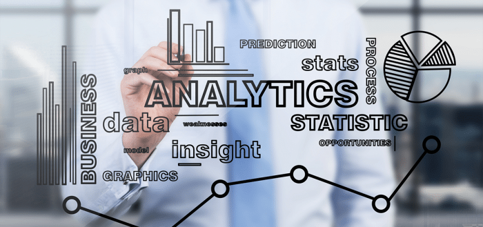
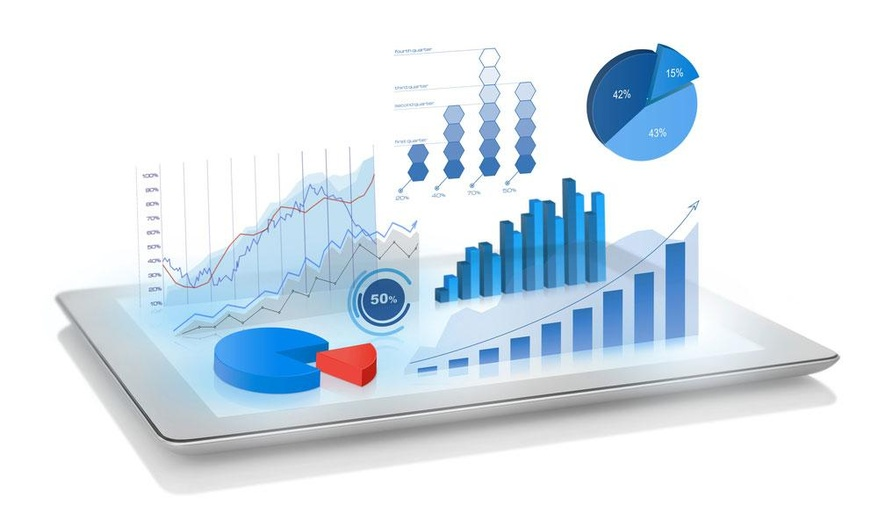
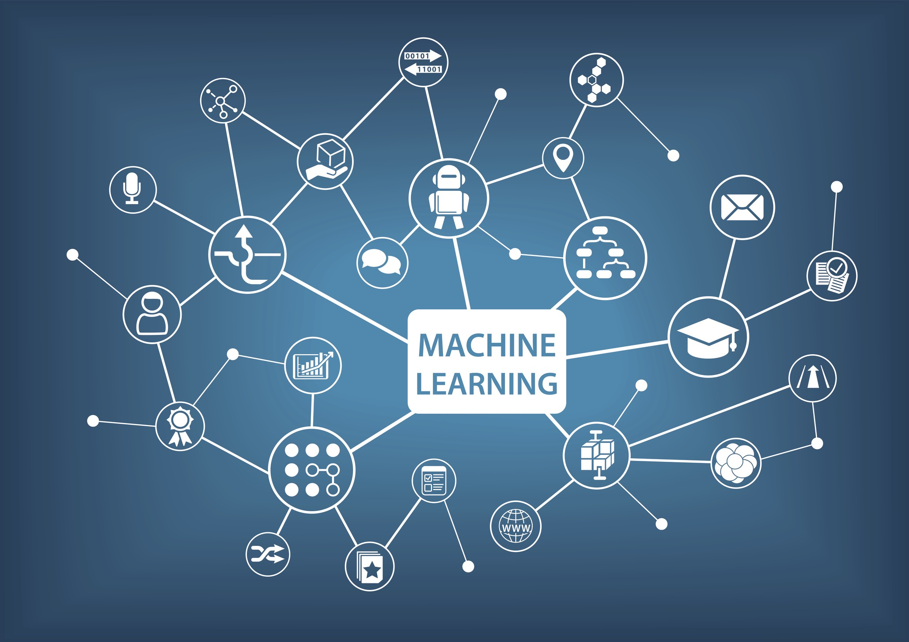
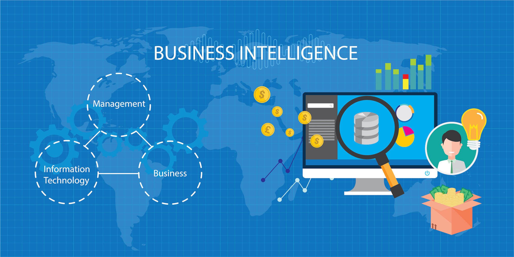
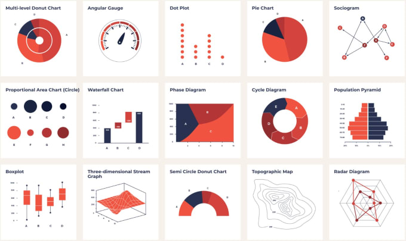

Data Scientist, Data Engineer, Business Analyst These are roles which businesses today, often confuse to be one and same. Although in truth they all require the art of solving business problems by: harvesting raw data, understanding and visualizing the data, and extracting actionable insights (knowledge that simplifies decision making) and value from data, they are indeed different roles and play different parts in the delivery of solutions that bring impact, insights and drive value for businesses.
The field of Data Science is one that has existed for quite a while now, and remains a multidisciplinary continuously evolving domain that encompasses: hacking/ programming skills, domain expertise, machine learning, and multivariate statistics knowledge to solve specific business problems by mining valuable insights from data.
Business analytics on the other hand, involves a lot more managerial responsibilities carried out alongside top business stakeholders. It is the use of data to drive better and accelerated informed business decisions. Dissecting business trends and patterns, mitigating risks, & accelerating idea generation.
It helps to decrease: time-to-insight, time-to-value and time-to-market . Business analysts are to properly understand the business and it's priorities (domain knowledge). Therefore they understand more the business implications of every analytical outcome
Business Analytics Vs. Data Science

Business Analyst: work along with top business stakeholders and help them make better day-to-day decisions that affect the overall business. They take actions based on past data ( use of data to drive business decisions) and then make projections
and simulations of future occurrence based on numerous assumptions that could alter the business' position which then enables them to plan and work more effectively.
They are more concerned with the business implications of a data analysis process. They show organizations the best path forward. Building better business strategy, forecasts and projections.
Characteristics of a Business Analyst
- Logical Problem Solving: Ability to take business phenomena, convert it to a data problem and understand how movement or change in a variable affects the other variables or outcome
- High Attention To Details: Understanding the interplay of multiple variables and being able to spot dependencies and correlations
- Curiosity: Ability to ask intelligent questions about variables in a given business problem
- Stakeholder Management: Ability to work well with top business stakeholders, providing proper feedback and giving the right recommendations
- Cross-Functioning: Ability to interface with different business functions and teams to get a holistic view and solution to a particular business problem in order to drive the needed overall high level impact and growth
Data Scientists: On the other hand, do a lot more than just processing data and gaining insights. It is an interdisciplinary branch of science that combines: maths, behavioral and workflow studies, core employment of algorithms and technology. They work on specific complex problems (e.g. building predictive models for a particular use case ) using data by leveraging statistical and technological tools. They research, build, train, and test models along with Data Engineers that could help businesses automate certain specific business decisions enabling data-driven decision making.
Data Engineers: Work hand in hand with data scientists, implementing the outcomes of the research carried out by data scientists. These ones are more concerned with the coding, and cleaning of the available data. They ensure the implementation of models, define pipelines that allow for model flow to end users, and productionize the final models.
Characteristics of a Data Scientist
- Technical Skills:
- Programming Skills
- Math / Statistical Skills
- Big-data Management, Analysis & Modelling Skills
- Proper Business Understanding/ Product Intuition:
- Understanding Business Metrics (domain expertise)
- Data Understanding
- Problem Defining Skills
- Understanding Needed Tools and Technology
- Communication Skills:
- Stakeholder Management
- Data Storytelling (Data Transformation and Exploration)
- Reporting (Visualization and Presentation)
Common Tasks For A Business Analyst In Business
In businesses, the role of business analytics is to ensure that the business is steered towards a desired direction, so the entire business goal is attained and proper strategies are put in place to ensure business projections are accurate and attainable.
Some of the common tasks for business analytics include:
- Situational Awareness and Insights: Business analytics allows organizations to properly understand exactly where they are in terms of performance and what their numbers add up to. Giving them actionable insights to enable informed decision making.
- Pattern Discovery: This involves accurately describing business patterns and trends over a period of time, to properly design strategies that work for given scenarios.
- Forecasting & Prediction of Future Events: With discovered business patterns and trends, business analytics can enable the prediction of future business outcomes, to enable a more proactive response and approach.
- Reality Probing (Hypothesis Testing): This allows businesses to test as much hypothesis as they might have, concerning their business operations. Enabling them to have a better understanding of their business outcomes.
Common Tasks For A Data Scientist In Business
The roles of data scientists in business differs from that of business analysts because they tend to solve more specific complex problems as against general/ overall business problems solved by the business analysts. But the data scientist can work hand in hand with the business analyst to deliver overall business value.
Some of the common tasks for Data Science include:
- Classification/Class Probability Estimation (Scoring): This generally involves classifying data points into different independent classes, or estimating the probability that a given data point will belong to a given class.
- Regression (Value Estimation): This involves estimating in numeric value, the quantity of a given variable in a specific entity to the greatest accuracy. E.g. price, size, amount, volume etc
- Similarity Matching: This involves the discovery of similar items in an entity based on certain characteristics of theirs
- Clustering (Grouping): This is the grouping up of data points or items within an entity into groups of similar characteristics or behaviour based on their attributes.
- Co-occurrence/Association Discovery: This discovers certain associations of items within an entity based on the frequency of their occurrence together.
- Profiling: This involves the behavioural description of an item or an entity. It can help establish behavioral norms to enable easy anomaly detection when these norms are deviated from.
- Link Prediction: This is usually used in network systems to establish and estimate strength of relationships of items within the network
- Data/Dimensionality Reduction: This helps to represent large dimensioned data into a smaller but equally representative form, for easier analysis. It helps cut down data dimensions to only important bits for better processing.
- Causal Modelling: This aims to discover events or occurrences that influence certain outcomes. Spotting highly impacting variables.
- Time Series Analysis: This involves the analysis of temporal data. Gaining quick insights into trends and patterns that occur over a given period of time.
Needed Data Science Skill Sets
-
Business Understanding
-
Data Gathering/ Collection
-
Data Preprocessing
-
Exploratory Data Analysis (EDA)/ Data Visualization

-
Statistical Analysis/ Modelling
-
Machine Learning

- Supervised Learning: This is where you feed the computer with well labelled data, and allow it to learn or discover a function that best describes the data such that when a new unseen data is fed to it, it can accurately make right decisions about the data. It is usually labelled as independent variables and dependent (target) variables which are usually to be predicted.
- Unsupervised Learning: Here, there is usually no specific target variable to be predicted, rather the computer is simply fed the data, and is left to just figure out patterns within the data without defining to it how it should do so. The machine is left to make the judgement based on what it can detect from the given data
- Reinforcement Learning: For this case the start state and end state are defined and the computer is left to figure out how to get there. And it is done through a rewarding and penalizing method. i.e. it is rewarded whenever it makes a right move, and penalized when it makes a wrong one. This way it learns what is right and wrong
-
Software Engineering (Deployment)
Whether you are a business analyst or a data scientist, this is one very vital skill that is needed in order to truly deliver the needed value to the business.
As a data scientist, this is very important because whatever problem you plan to use data science techniques to solve, would require that you first properly understand the business objectives to enable you proffer the right and needed solutions.
Data is the raw material from which every informed business solution is created. Without data, not much can be done as regards driving data driven solutions. Hence understanding how to fetch, pull and gather the needed data becomes a very vital skill set. It involves the use of tools such as SQL (Structured Query Language) which allows
for the querying of databases which often houses ànd stores the needed data.
Every business that is indeed serious about making better decisions and creating effective strategies, needs to start to see data as an asset.

After raw data has been collected and gathered, more often than not it is usually in a state that is unusable for the purpose for which it was gathered. So the gathered data therefore needs to be refined, to enable it to deliver the wanted results. This is also known as Data Wrangling or Data Cleansing. It typically involves: labelling of data points, removing noise(errors), filling missing data, feature engineering and selection.
After the data has been cleaned and well labelled, there is a need to properly understand and get familiar with the data you are working with. Understanding the various data-types present, and number of data observations present.
Exploratory data analysis (EDA) often involves exploring the data to discover: relationships, composition, distribution, measures of variability etc. This is usually done using plots, tables and charts
After we understand our data properly, we can begin to test numerous hypotheses, obtain descriptive and inferential statistics, and create various experimental designs that allow for the testing and simulation of scenarios.
Statistical modeling is the process of applying statistical analysis to a dataset. A statistical model is a mathematical representation (or mathematical model) of observed data. It is usually specified as a mathematical relationship between one or more variables.
Machine learning is a huge domain on its own. it's a subset of Artificial Intelligence (AI), and it can be summarized as: A branch of computer science that tries to teach machines to learn from data, without explicitly programming it to do so. The concept states that computer programs can learn and adapt to new data, after being trained with similar data without much human
interference.
It typically involves three (3) main tasks:

After statistical and machine learning models have been designed, trained and tested, they are then ready to be consumed by end users who use these models to either automate certain tasks or facilitate decision making.
There is therefore a need to move the designed models into production space to be consumed. And this is done with some level of software engineering.
These models are usually pushed out as either Web and Mobile applications, or are consumed through APIs (Application Programming Interface) which allows other programs to interact and communicate with them.
Typical Tools/Frameworks for deployment are Python's Django, Flask or Streamlit.
Data Science Life-Cycle & Pipeline
The data science life-cycle typically involves the entire process needed to: define a business problem, obtain needed data and create the needed solutions. And the life-cycle involves:
- Data Gathering, Collection or Capturing: Here we have data acquisition, data extraction and data entry.
- Data Maintenance/ Preprocessing: data warehousing, data cleansing, data staging, data architecture.
- Data Exploration and Analysis: data mining, data modelling, data summarization, predictive analysis.
- Data Communication: data reporting, data visualization, business intelligence, decision making.
The data science pipeline are the step-by-step procedures to be followed in a given order to obtain your needed solution. They include:
- Problem Definition: Define the business problem that needs a solution
- Hypothesis Generation: State all possible hypothesis to be proved right or wrong
- Data Extraction and Collection: Obtain the needed data
- Data Transformation and Exploration: Clean the data and get it in good shape
- Predictive Modeling: Build, train and test models
- Data Deployment, Implementation & Maintenance: Push created model into production to be consumed
The Entire Business Analytics and Data Science Spectrum
For a business to really reap benefits from its data assets, it would have to span both business analytics and data science spectrum. And this spectrum involves activities or tasks that move from low-complexity to high-complexity.
This spectrum includes:
-
Management Information Systems (M.I.S)
-
Detective Analysis
-
Business Intelligence

- Get fast answers to business queries
- Enable real-time analysis and quick navigation
- Identify cross sell and upselling opportunities
- Reduce the risks of bottle necks
- Improves decision making and provides actionable insights
-
Predictive Modelling / Forecasting
-
Machine Learning
A management information system (MIS) is a system that serves as the backbone of an organization’s operations. An MIS gathers data from multiple online systems, analyzes the information, and reports data to aid in management decision-making.
It usually involves informing business stakeholders(through reporting) what has happened i.e. past events. In businesses, it helps to ensure that correct and uniform information is circulated across the organisation. It addresses knowledge gaps in businesses and is used for business monitoring, reviews and discussions.
This kind of analysis seeks to extract a bit more information from M.I.S reports. It takes a hypotheses driven approach proving and disproving several hypothesis. It answers the question of "Why?". asking why certain outcomes exists
The overall purpose of being a data detective is to gain confidence in your understanding of the data and develop a firm foundation for drawing inferences from that data
Business Intelligence (BI) or Dashboarding involves a set of techniques and tools for the transformation of raw data into meaningful and useful information that helps in making effective business decisions.
Business Intelligence (BI) refers to technologies, applications and practices for the collection, integration, analysis, and presentation of needed business information to support better business
decision making. Essentially, Business Intelligence systems are referred to as: data-driven Decision Support Systems (DSS). They are usually carried out using Dashboards

A Dashboard is a single page, often called a canvas, that uses visualizations to tell a story and contains only the most important elements of that story. It serves you all you need to know on a single page
Unlike M.I.S where the data has to be pulled and processed before reports are made, dashboards display the output to stakeholders in near real-time. It is often called Dynamic Reporting
Benefits of Business Intelligence Includes Use of Data to:
Predictive modeling is the process of using known data and results to create, process, and validate a predictive model that can be used to predict future outcomes.
It attempts to accurately predict sales or outcomes of specific business operations.
Forecasting is a method to predict the future, where the future is narrowly defined by certain conditions. It combines information gathered from historical data, with an accurate description of the current positions (past and present data), to predict future conditions for a business.
Predictive modelling tends to predict more granular outcomes e.g. how much of a specific product will be sold in a week or month. While Forecasting deals more on the macro level. i.e. trying to predict overall sales to be made for the next coming year. But they both aim to give businesses a chance to be more proactive and prepared, helping stakeholders act more effectively.

Machine learning is an application of artificial intelligence (AI) that provides systems the ability to automatically learn and improve from experience without being explicitly programmed. Machine learning focuses on the development of computer programs that can access data and use it to learn for themselves.
Machine learning Models Vs. Statistical Models
If we simply desire accurate automated predictions, without wanting to know why each decision was taken (the blackbox approach), Machine learning models are a way to go. Here we simply leave the machine to decide the outcome based on the clean data we have fed it with for it to learn from.
But if we need to know the reasons why certain outcomes are gotten for explainability, because nature of assumptions or outcomes could have huge business impact, then predictive statistical modelling works better because here there is formalization of mathematical relationships between variables hence its explainability
Summary
- Data Scientists: Examines specific problems and questions that need answering, gets the related data, cleans, analyze then proffer solutions. They have good business acumen and analytical skills as well as programming skills. They
analyze large unstructured data, from which results are then synthesized and communicated to key stakeholders to drive strategic decision making.
Skills Needed: Programming Skills (Python, R, SAS), statistical and mathematical skills, storytelling and data visualization skills, machine learning skills. - Data Engineers: Manages exponential amounts of rapidly changing data. They often focus on the development, deployment, management and optimization of data pipelines and infrastructure to transform data models into final products to be consumed.
Skills Needed: Programming Skills (Java, Python,Scala) , Database management and NoSQL databases, frameworks (Django, Flask, Streamlit). - Business Analysts: `They bridge the gap between data scientists and top business stakeholders and executives. They are provided with the questions that need answering from the organisation and are to find results that align with high-level business strategy. They translate technical analysis to qualitative action items
and effectively communicate their findings to diverse stakeholders.
Skills Needed: Data wrangling skills, logical thinking and problem solving skills, data visualization and communication skills.